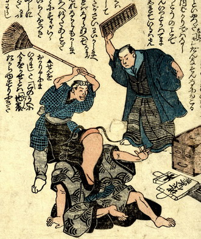

鯰が2人の男に殴りかかられている。鯰は波の模様が入った墨色の着物を着て座り、片手をあげて、男たちを制止しようとしている。向かって右側の男は、黒い着物に紺色の羽織をまとい、算盤を振り上げている。足元に帳箪笥と地代受帳が置かれている。左側の男は鉢巻きを締め、黒い前掛けをつけて、箒を振り上げている。
出典：親書誌：U426_nichibunken_0160：（地震小咄；ジシンコバナシ）／日付：2010／資源識別子：U426_nichibunken_0160_0001_0000
Copyright (c)2010- International Research Center for Japanese Studies, Kyoto, Japan. All rights reserved.